从对象、观察者和光，到虚拟相机与二维图像
40 min · 思想实验 + 成像模型 + 概念辨析 + AI纠错
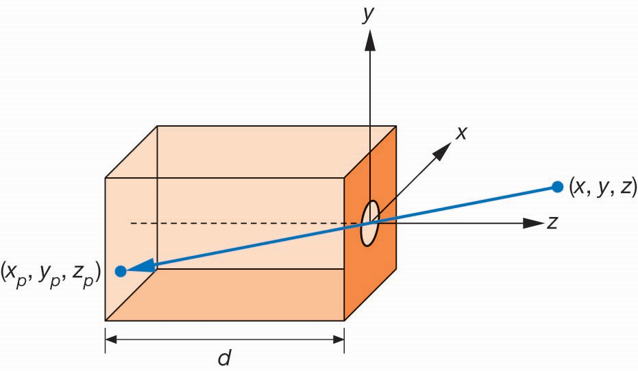
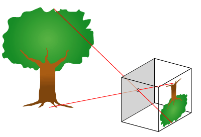
怎样把三维世界中的对象，变成二维平面上的图像？
真实相机依赖光学；计算机图形学则要把这个过程抽象成数学模型，再交给程序和GPU计算。
从原始 CT / MRI 到分割、重建三维结构，主要涉及医学图像处理与重建。
从已有三维结构出发：从哪里看？怎样投影？光与材质怎样影响最终显示？
对象、观察者和光为什么缺一不可。
小孔相机、透视关系与视域。
虚拟相机、裁剪窗口与成像过程。
怎样在玻璃上画出与眼睛所见一致的轮廓？
先画图，不查资料：你认为“观察点”和“玻璃平面”的位置改变后，最终图像会发生什么变化？
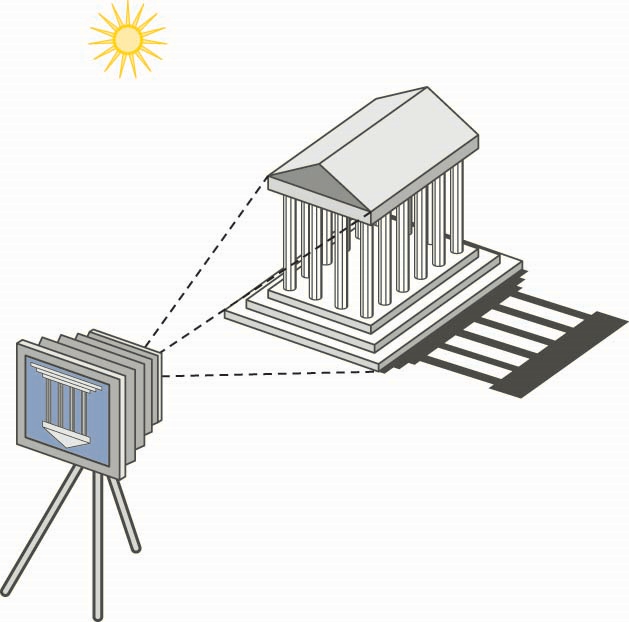
最终图像是三者相互作用的结果，而不是某一个对象“自带”的属性。
由空间中的几何信息定义，本身独立于某个特定观察者。
位置与方向决定从哪里看、朝哪里看。
是三维对象在特定观察条件下的投影结果。
“图像就是对象的二维副本。”这句话哪里不准确？
位置、方向、视野变化 → 构图和透视变化。
亮暗、颜色、阴影、反射等视觉效果变化。
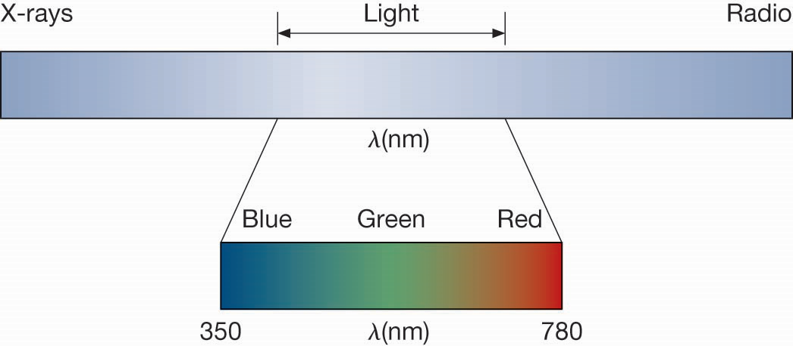
第一章只建立模型，不深入电磁波物理细节。
真实光线从光源发出，经过场景后只有极少一部分进入相机。
从“真正要生成的像素”出发反向查询场景，更高效。
这与上一课的“光栅化：物体→屏幕；光追：像素/相机→场景”怎样对应？
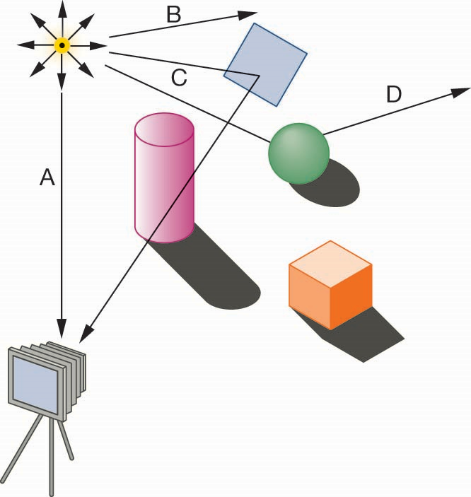
因此它特别适合表达镜面反射、透明物体和复杂阴影。
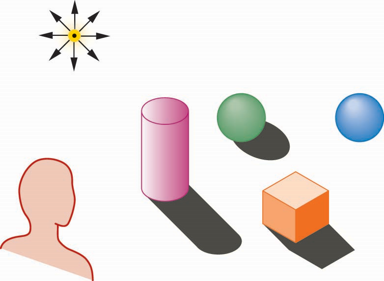
局部光照：主要根据光源到当前表面的直接作用计算颜色。
全局光照：还考虑其他表面反射/透射来的间接光。
光线追踪是一类求解路径；是否“全局”取决于追踪和光照模型考虑了哪些传播过程。
沿光线路径求交与递归，现代实时图形也大量使用。
以能量交换为基础，经典上特别适合漫反射表面的间接光照。
通过随机采样大量光路估计完整光传输，是现代离线真实感渲染的重要方法。
第一章只需要认识：越接近完整光传输，通常计算代价越高。
每个像素用一个数值表示亮暗。
每个像素需要多个分量共同描述颜色；显示系统最常见的是 RGB。
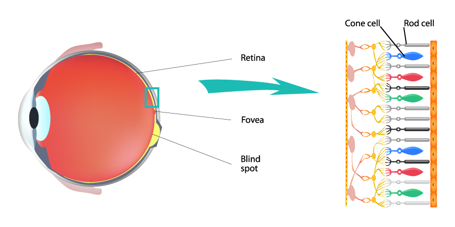
因此，显示系统可以用三个基色分量来近似形成丰富的颜色感知。
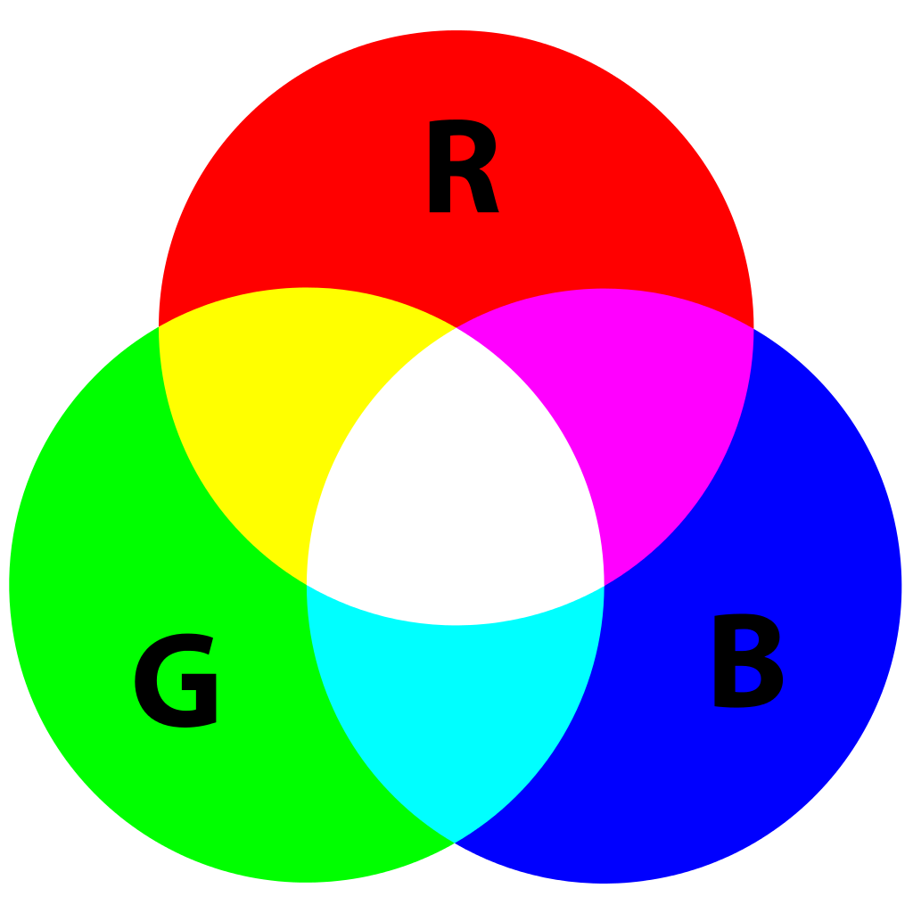
显示器、投影等主动发光设备。
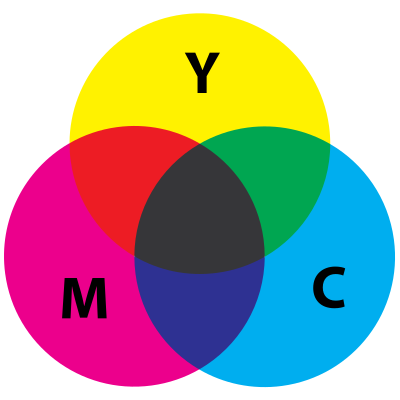
印刷等依靠材料吸收部分白光的系统。
为什么同一件衣服在日光、暖色灯和显示器照片中，看起来可能不是同一种颜色？
物体离相机越远，投影越小。
焦距/投影平面距离改变，观察范围随之变化。
视域描述相机能够“纳入画面”的角度范围。
物体距离变成原来的 2 倍，其他条件不变，它在图像上的线性尺寸大约怎样变化？
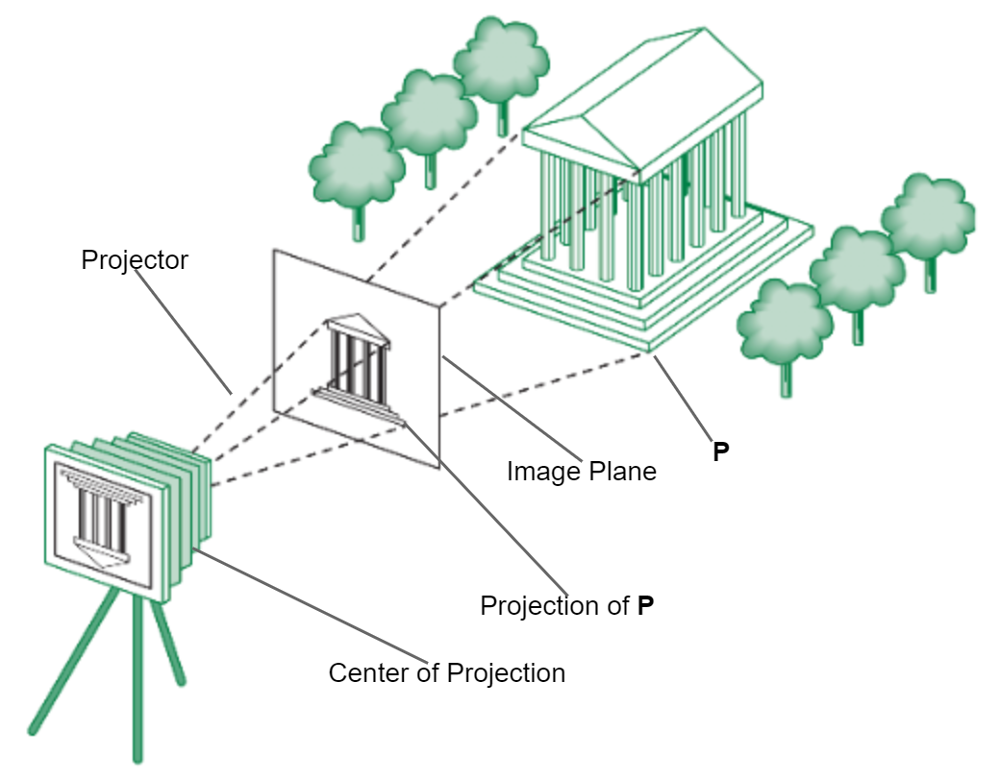
真实胶片位于针孔后面且图像倒立；虚拟相机把成像平面移到投影中心前方，得到更直观的正立几何模型。
物理装置可以不同，但投影几何关系等价。
可以独立定义模型和相机，再自由组合视图。
统一了透视、平行投影等不同观察方式。
位置、方向、焦距/FOV、成像窗口等都能显式描述。
投影和坐标变换可转化为规则的矩阵计算。
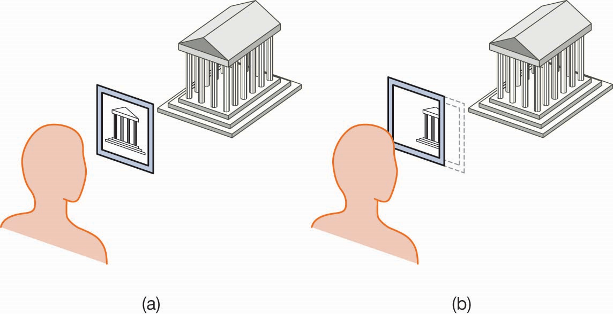
这就是后续“裁剪”算法的几何来源。
相机向前移动 2m
物体向相机移动 2m
什么条件下两幅图像可以完全相同？——这正是后续“世界坐标 → 相机坐标”变换的直觉基础。
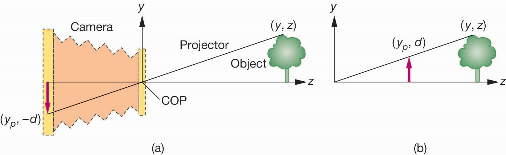
医生旋转三维肝脏模型、放大病灶区域时，原始器官几何一定发生改变了吗？请区分“模型变化”和“观察条件变化”。
下一课将把这条链真正“打开”，进入 GPU 绘制流水线。
“计算机图形学中的相机负责捕获三维世界中真实存在的光线，并将其转换为二维图像。”
它描述了真实相机的物理直觉。
虚拟相机主要定义观察与投影关系，图像由渲染算法计算，而不是物理设备直接“捕获”。
请把原句改成一条适用于计算机图形学的准确表述，再让 AI 评价你修改后的版本，并判断 AI 的评价是否可信。
场景表示和绘制算法可以变化，但“场景 + 观察条件 → 图像”仍是核心问题。
| 问题 | 你的答案 |
|---|---|
| 一幅合成图像的三个基本要素是什么？ | 对象 / ______ / ______ |
| 为什么远处物体看起来更小？ | 来自 ______ 投影关系 |
| 全局光照比局部光照多考虑了什么？ | ______ 光 |
| 虚拟相机最核心的任务是什么？ | 定义观察与 ______ 关系 |
对象、观察者和光共同决定图像。
光的传播、材质响应和视觉系统决定可见结果。
小孔模型解释三维点如何映射到二维平面。
用几何参数描述观察、投影与裁剪，连接到GPU流水线。
“三维场景变成二维图像，本质上需要 ______________________________。”
再勾选目前最不确定的一项：光 / 颜色 / 透视 / FOV / 合成相机 / 裁剪。
下一课：GPU 怎样真正把三角形变成屏幕像素？